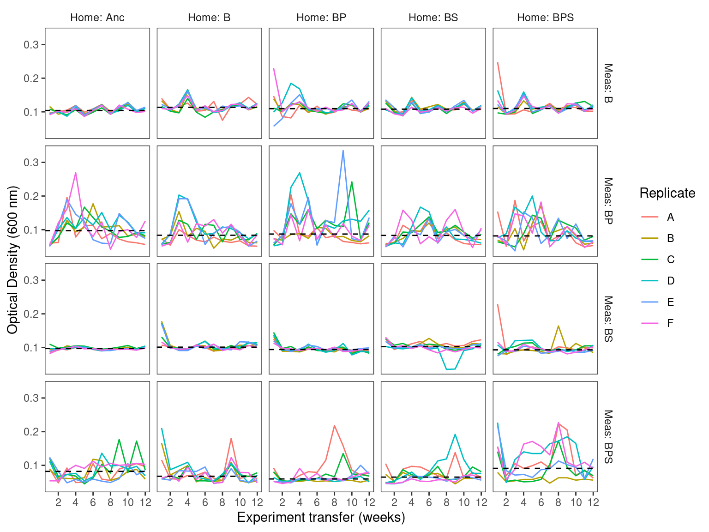
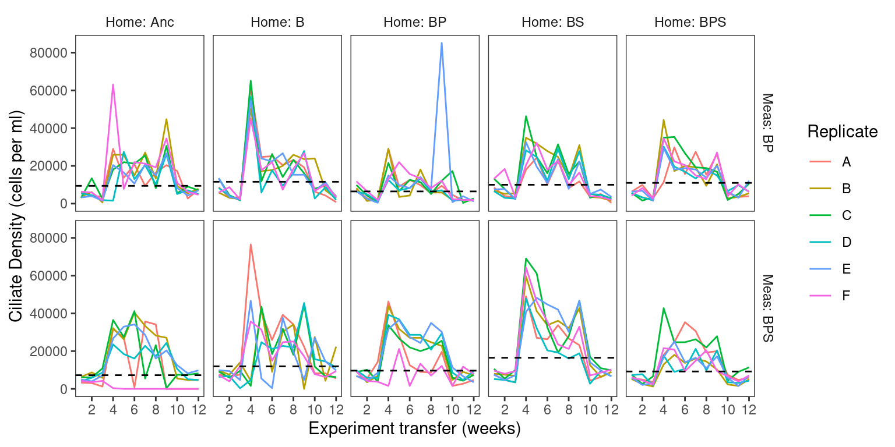

Predator and STR Community growth workflow i) Process and plot bacteria and ciliate densities
1 Setup
This code loads required libraries and sets global variables
1.1 Read and format Optical Density Data
This code reads optical density data - OD600 and creates variables used later
Show/hide code
od <- readr::read_tsv(here::here(data_stp_ds, "OD600.tsv")) %>%
dplyr::group_by(measure_env, evolution_env) %>%
dplyr::mutate(mean_od = median(od600)) %>%
dplyr::ungroup() %>%
dplyr::mutate(
measure_env_short = dplyr::case_when(
measure_env == "bact" ~ "Meas: B",
measure_env == "bact_pred" ~ "Meas: BP",
measure_env == "bact_strep" ~ "Meas: BS",
measure_env == "bact_pred_strep" ~ "Meas: BPS"
)
) %>%
dplyr::mutate(
home_env_short = dplyr::case_when(
evolution_env == "anc" ~ "Home: Anc",
evolution_env == "bact" ~ "Home: B",
evolution_env == "bact_pred" ~ "Home: BP",
evolution_env == "bact_strep" ~ "Home: BS",
evolution_env == "bact_pred_strep" ~ "Home: BPS"
)
) %>%
dplyr::mutate(
measure_env_short = factor(
measure_env_short,
levels = c("Meas: B", "Meas: BP", "Meas: BS", "Meas: BPS")
),
home_env_short = factor(
home_env_short,
levels = c("Home: Anc", "Home: B", "Home: BP", "Home: BS", "Home: BPS")
),
replicate = factor(replicate)
)1.2 Read and format Ciliate density data
This code reads Ciliate density (in cell counts per ml) and creates variables used later
Show/hide code
tetra <- readr::read_tsv(here::here(data_stp_ds, "tetrahymena.tsv")) %>%
dplyr::group_by(measure_env, evolution_env) %>%
dplyr::mutate(mean_cil = median(ciliate_per_ml)) %>%
dplyr::ungroup() %>%
dplyr::mutate(
measure_env_short = dplyr::case_when(
measure_env == "bact" ~ "Meas: B",
measure_env == "bact_pred" ~ "Meas: BP",
measure_env == "bact_strep" ~ "Meas: BS",
measure_env == "bact_pred_strep" ~ "Meas: BPS"
)
) %>%
dplyr::mutate(
home_env_short = dplyr::case_when(
evolution_env == "anc" ~ "Home: Anc",
evolution_env == "bact" ~ "Home: B",
evolution_env == "bact_pred" ~ "Home: BP",
evolution_env == "bact_strep" ~ "Home: BS",
evolution_env == "bact_pred_strep" ~ "Home: BPS"
)
) %>%
dplyr::mutate(
measure_env_short = factor(
measure_env_short,
levels = c("Meas: B", "Meas: BP", "Meas: BS", "Meas: BPS")
),
home_env_short = factor(
home_env_short,
levels = c("Home: Anc", "Home: B", "Home: BP", "Home: BS", "Home: BPS")
),
replicate = factor(replicate)
)2 Plot
This code constructs ggplot2 plots of OD600 and ciliate data, saves them in raster and vector format, and places the plots in the notebook
2.1 OD600
Show/hide code
pod <- ggplot2::ggplot(od, aes(x = transfer, y = od600)) +
ggplot2::geom_line(aes(color = replicate)) +
ggplot2::geom_hline(aes(yintercept = mean_od), linetype = "dashed") +
ggplot2::scale_x_continuous(breaks = c(2, 4, 6, 8, 10, 12)) +
ggplot2::labs(y = "Optical Density (600 nm)", x = "Experiment transfer (weeks)", color = "Replicate") +
ggplot2::facet_grid(measure_env_short ~ home_env_short) +
ggplot2::theme_bw() +
ggplot2::theme(
panel.grid.major = element_blank(),
panel.grid.minor = element_blank(),
panel.background = element_blank(),
strip.placement = 'outside',
strip.background = element_blank(),
)
ggplot2::ggsave(
here::here(figs_stp, "community_optical_density.svg"),
pod,
width = 8,
height = 6,
units = "in",
device = "svg"
)
ggplot2::ggsave(
here::here(figs_stp, "community_optical_density.png"),
pod,
width = 8,
height = 6,
units = "in",
device = "png"
)
2.2 Ciliate
Show/hide code
ptet <- ggplot(tetra, aes(x = transfer, y = ciliate_per_ml)) +
geom_line(aes(color = replicate)) +
geom_hline(aes(yintercept = mean_cil), linetype = "dashed") +
scale_x_continuous(breaks = c(2, 4, 6, 8, 10, 12)) +
facet_grid(measure_env_short ~ home_env_short) +
labs(y = "Ciliate Density (cells per ml)", x = "Experiment transfer (weeks)", color = "Replicate") +
theme_bw() +
theme(
panel.grid.major = element_blank(),
panel.grid.minor = element_blank(),
panel.background = element_blank(),
strip.placement = 'outside',
strip.background = element_blank(),
)
ggplot2::ggsave(
here::here(figs_stp, "community_ciliate_density.svg"),
ptet,
width = 8,
height = 4,
units = "in",
device = "svg"
)
ggplot2::ggsave(
here::here(figs_stp, "community_ciliate_density.png"),
ptet,
width = 8,
height = 4,
units = "in",
device = "png"
)
3 Export
We will want to try and use this data as predictors for the ML pipeline. We only have community composition data from days 4, 8 and 12 so we will subset those. We also set ciliate density to 0 for the measurement environments that don’t have ciliates
Show/hide code
dplyr::left_join(od, tetra, by = join_by(measure_env, evolution_env, replicate, transfer, measure_env_short, home_env_short)) %>%
dplyr::filter(transfer %in% c(4, 8, 12)) %>%
dplyr::select(measure_env, evolution_env, replicate, transfer, od600, ciliate_per_ml) %>%
dplyr::mutate(ciliate_per_ml = if_else(is.na(ciliate_per_ml), 0, ciliate_per_ml)) %>%
readr::write_tsv(here::here(data_stp_ml, "density4ML.tsv"))